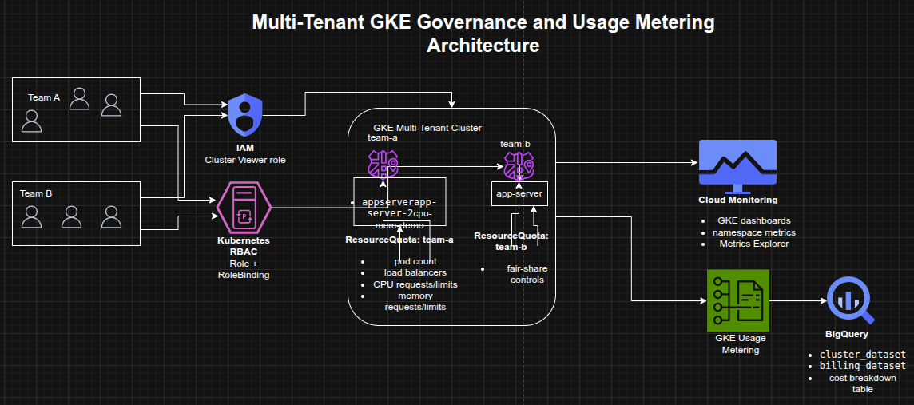

Managing a Multi-Tenant GKE Cluster with Namespaces, RBAC, and Usage Metering
Managing a Multi-Tenant GKE Cluster with Namespaces, RBAC, and Usage Metering
Timeline: December 2025
Role: Cloud Engineer / Site Reliability Engineer
Skills: Google Kubernetes Engine (GKE), Kubernetes Namespaces, RBAC, IAM, Resource Quotas, GKE Monitoring, Metrics Explorer, BigQuery, Looker Studio, Usage Metering, Cost Optimization
Project Summary
This project focused on configuring a multi-tenant Google Kubernetes Engine (GKE) cluster to improve resource efficiency, tenant isolation, and cost visibility. The implementation used Kubernetes namespaces to segment workloads by team, applied IAM and Kubernetes RBAC for controlled namespace access, enforced fair-share consumption using object-count and CPU/memory quotas, and used Google Cloud observability tooling to monitor usage and cost allocation by namespace.
The project demonstrated how a shared GKE cluster can be governed effectively without creating separate clusters per team, supporting both operational isolation and cost optimization.
Objectives
- Create multiple namespaces in a GKE cluster
- Configure RBAC and IAM for namespace-scoped access
- Enforce fair resource sharing with Kubernetes resource quotas
- Monitor namespace usage with GKE dashboards and Metrics Explorer
- Enable GKE usage metering for more granular resource visibility
- Build a Looker Studio report to analyze namespace-level cost breakdown
Architecture Overview
The architecture consisted of:
- A shared multi-tenant GKE cluster hosting workloads for multiple teams
- Separate team namespaces (
team-a,team-b) for logical isolation - IAM roles granting minimal cluster-level access
- Kubernetes Roles and RoleBindings granting namespace-scoped permissions
- ResourceQuota objects enforcing pod-count and CPU/memory limits
- Cloud Monitoring dashboards and Metrics Explorer for namespace usage visibility
- BigQuery datasets storing usage metering and billing export data
- Looker Studio visualizations showing cost breakdown by namespace and resource type

Implementation & Highlights
1. Multi-Tenant Namespace Design
- Connected to the provided GKE cluster
- Reviewed default Kubernetes system namespaces
- Created separate namespaces for:
team-ateam-b
- Deployed workloads with the same resource name in different namespaces to demonstrate isolation
2. Namespace-Scoped Access Control
- Granted the
Kubernetes Engine Cluster ViewerIAM role to a service account representing a developer - Created Kubernetes Roles for namespace-specific permissions
- Bound the service account to the namespace role using a RoleBinding
- Verified that the account could access
team-aresources while being denied access toteam-b
3. Resource Quotas for Fair Sharing
- Created an initial quota limiting:
- pod count
- load balancer service count
- Verified quota enforcement by attempting to exceed the namespace pod limit
- Updated the quota to allow more pods as workload requirements changed
4. CPU and Memory Quotas
- Applied a second ResourceQuota object limiting:
- CPU requests
- CPU limits
- memory requests
- memory limits
- Created a workload with explicit resource requests and limits
- Verified that namespace resource consumption was reflected correctly in quota usage
5. Monitoring and Namespace Visibility
- Used the GKE Monitoring dashboard to inspect namespace-level utilization
- Filtered workloads by namespace for tenant-specific visibility
- Used Metrics Explorer to graph container CPU usage aggregated by namespace
- Excluded
kube-systemto focus on tenant workloads
6. GKE Usage Metering and Cost Visibility
- Enabled GKE usage metering on the cluster
- Used BigQuery datasets containing:
- cluster resource usage
- billing export data
- Generated a cost breakdown table using a scheduled query
- Created a Looker Studio data source and report for:
- cost by namespace
- cost by resource type
- namespace filtering via dropdown controls
Design Decisions
- Used one shared GKE cluster instead of separate clusters per team to reduce cluster sprawl and improve cost efficiency
- Used namespaces as the primary isolation boundary for team workloads
- Combined IAM + Kubernetes RBAC so cluster access stayed minimal while permissions remained granular
- Applied resource quotas to prevent a single team from consuming disproportionate cluster resources
- Used Monitoring + Metrics Explorer for operational visibility
- Used BigQuery + Looker Studio to extend from operational monitoring into namespace-level cost analysis
Results & Impact
- Successfully implemented a multi-tenant GKE governance model
- Demonstrated practical use of:
- namespaces
- IAM and RBAC
- pod and resource quotas
- observability dashboards
- usage metering
- namespace-level cost reporting
- Improved understanding of how shared Kubernetes environments can balance:
- tenant isolation
- fair resource allocation
- operational visibility
- cost optimization
Tools & Technologies Used
- Google Kubernetes Engine (GKE) – Shared cluster platform
- Kubernetes Namespaces – Tenant isolation
- IAM – Cluster-level access
- Kubernetes RBAC – Namespace-level authorization
- ResourceQuota – Fair resource governance
- Cloud Monitoring – Dashboards and namespace visibility
- Metrics Explorer – Namespace CPU usage analysis
- BigQuery – Usage metering and billing datasets
- Looker Studio – Cost breakdown reporting
Outcome
This project demonstrates the ability to design and govern a multi-tenant Kubernetes environment on Google Cloud using namespace isolation, RBAC, quotas, monitoring, and usage metering. It highlights practical skills in cluster governance, resource control, observability, and cost optimization, which are highly relevant to cloud engineering, platform engineering, and site reliability roles.